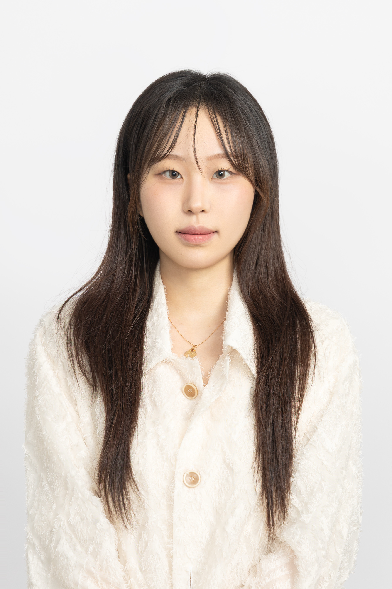

Queena (Yebin) Lee is a Communication Design BFA Junior at Parsons School of Design, The New School. She focuses on UI/UX design and typography studies, exploring how visual form and language shape user experience. Currently, she continues to deepen her study in this field.
Parsons School of Design — BFA in Communication Design
New York, NY · August 2023 – May 2027
Yonsei University Summer Program — Introduction to Art History / CG & AI Design
Seoul, South Korea · June 2024 – July 2024
Hanyang University Winter Program — Modern Society/ Marketing & Revolution Science Technology
Seoul, South Korea · Dec 2025 - Jan 2026
Langley Secondary School
BC, Canada · Sep 2020 – Jan 2023
The Bridge Art + Design — AP in Studio Art: 2D & 3D Design
Vancouver, Canada · May 2022 – 2023
LIKELION US — UI/UX Project Team · Incoming Member
Project member · New York · 2026 – Present
Selected to join the UI/UX Project Team to strengthen UX fundamentals through weekly critiques and product breakdowns.
Figma Build 2025 — Collaborative Design Project
UI/UX Designer · New York · 2025
Collaborated with NYU students to design a prototype, Morp, a speculative shopping app.
The New School Parsons — Exhibition (Sheila C. Johnson Design Center)
Design Student · New York · 2024
Exhibited selected works; selected by the professor to represent the class for innovation and creative execution.
Rhode Island School — Coursework
Providence, RI · 2022
Gained experience in pattern design and critical evaluation through rigorous coursework focused on foundational design skills.
Art + Action · Project Member & Volunteer
Vancouver, Canada · Mar 2022 – Jun 2023
Participated in regular meetings, fundraising events, and community cleaning services.
Scholastic Art & Writing Awards — Gold Key, Silver Key, and Honorable Mention
New York, NY · 2023
Recognized for outstanding creative achievements.